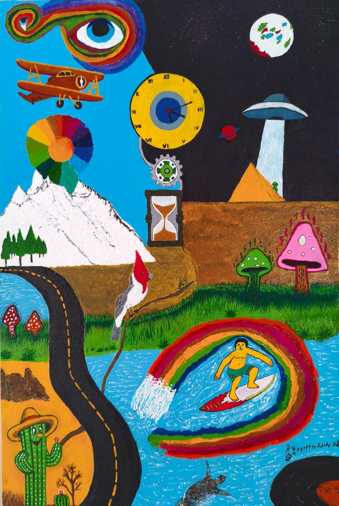
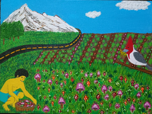
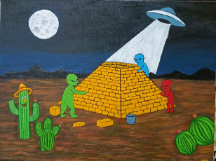
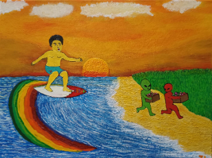
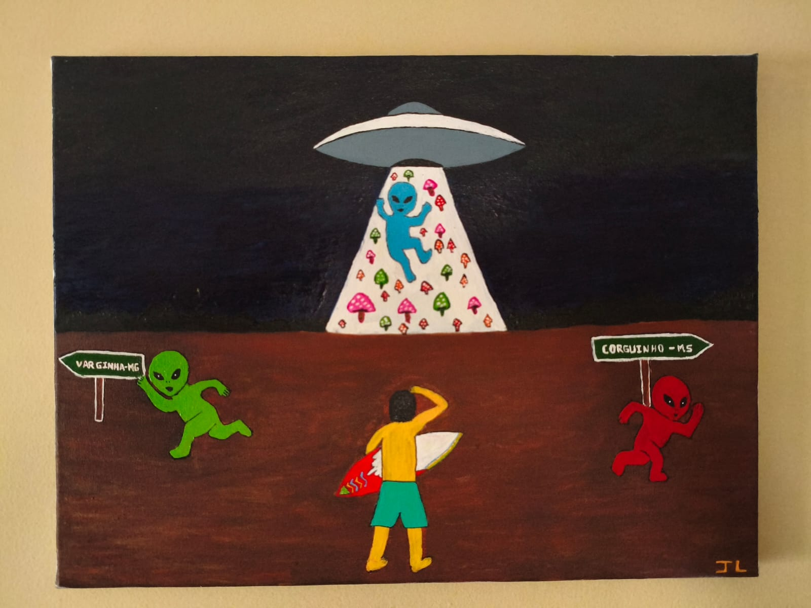
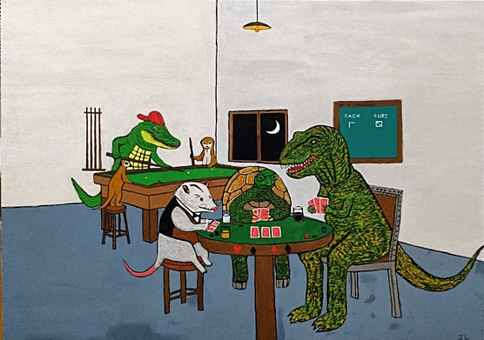
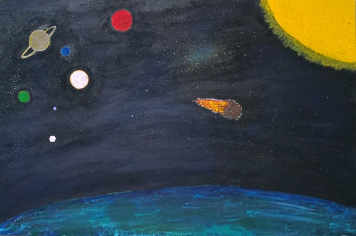

Acrílica sobre tela • 40x60cm
A peça central que ancora todo o sistema simbólico da série.
Minha obra é a materialização visual de um cérebro em constante ebulição. Através de uma estética psicodélica e surrealista, traduzo a fronteira entre o real e o absurdo com uma dose de ironia e o caos necessário de quem vê o mundo sob outros prismas.

Acrílica sobre tela • 40x60cm
A peça central que ancora todo o sistema simbólico da série.

Acrílica sobre tela • 40x30cm
O princípio produtivo biológico.

Acrílica sobre tela • 40x30cm
Integração tecnológica alienígena.

Acrílica sobre tela • 40x30cm
Clímax e ruptura narrativa.

Acrílica sobre tela • 40x30cm
Desfecho e marcas no ecossistema.

Acrílica sobre tela • 70x50cm
PERSONAGENS:
• Jack – é um Fotógrafo humano que tomou uma vacina e virou jacaré.
• Suri – Suricato fêmea com seu filho. Ela é programadora.
• Cassaco – Gambá-de-orelha-branca Anídio. Ele é cobrador de ônibus.
• Rubens – tartaruga, é piloto de corrida de carros.
• Martin – tiranossauro rex é açougueiro.

Acrílica sobre tela • 60x40cm